八坂庚申堂/京都府
京都である。東山である。八坂である。
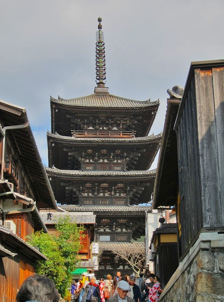
東山の八坂といえば言わずと知れた八坂の塔。
周囲には八坂神社、清水寺、二年坂、三年坂、さらには縁切りで有名な安井金比羅宮、冥途通いの六道珍皇寺、空也上人像の六波羅蜜寺などなど…
京都市内でも有数の観光客押し寄せスポットである。
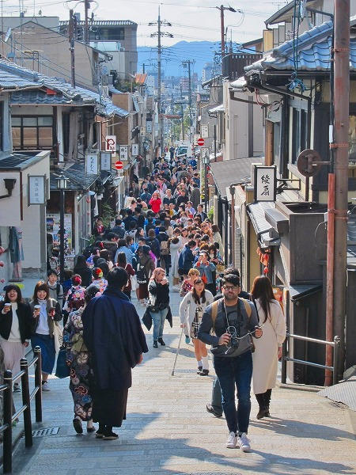
狭い道には観光区客がびっしり。
レンタル着物を着た海外からの観光客が多かった。
そんな八坂の一画、八坂の塔のすぐ近くに赤い門が見える。
八坂庚申堂である。
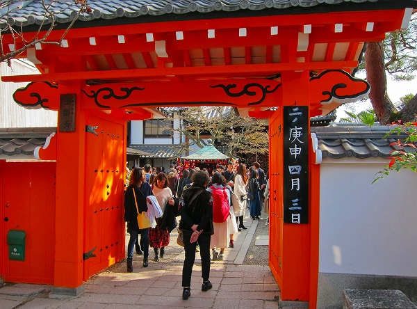
千年以上の歴史を持つ日本最古の庚申堂だ。
ただでさえ観光客が多いエリアだが、ここの境内はさらに人口密度が高いぞ。
ついでに言えば若い女性の比率が異様に多いぞ…。
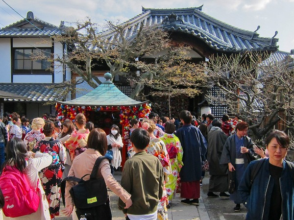
中に入ってみると…
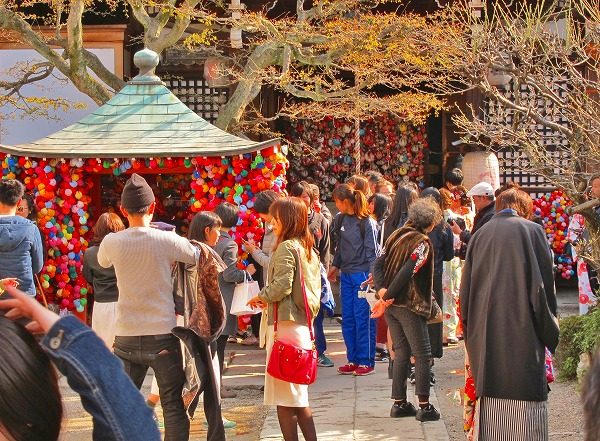
何やら異様にカラフルな感じ。
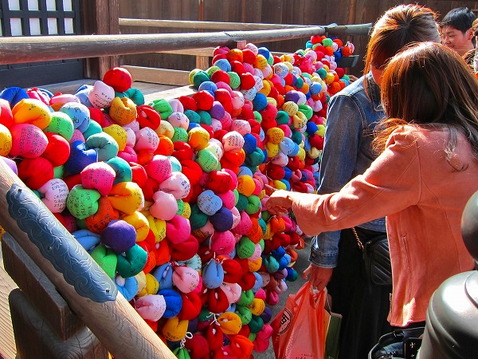
見れば本堂の欄干にたくさんのカラフルなお手玉のようなモノがくくり付けられているではないか！
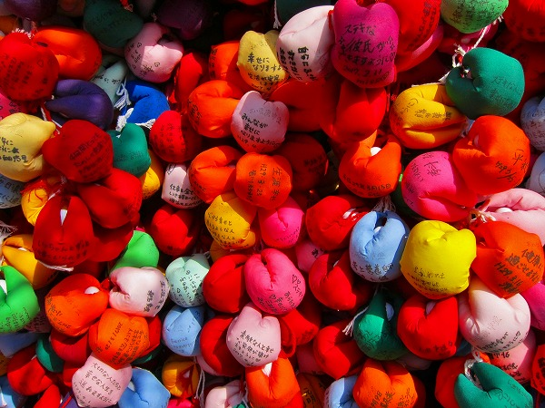
よーく見るとくくり猿だ。
くくり猿とは手裏剣のような布の中心に頭を据え、四隅を縛ったもの。
岐阜の猿ぼぼの手足を結び付けたような感じだ。
暴れん坊の猿が手足を縛られているというのはつまり人間が様々な欲望を我慢し、願を掛けている状態を表しているのだとか。
このくくり猿、特に京都や奈良でよく見るような気がするが、奉納物としては全国区だと思う。
ただしここ以外のくくり猿は赤一色である。こんなカラフルなくくり猿はここだけだろう。
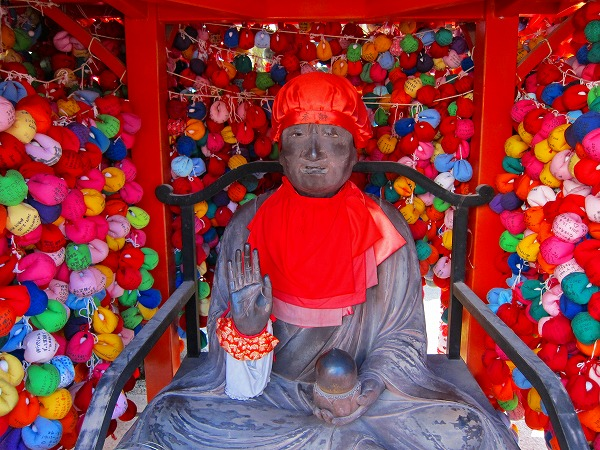
本堂前にある融通尊という小堂にはおびんずるさまが座っている。
カラフルなくくり猿にびっしりと囲まれておびんずるさまも心なしか嬉し恥ずかし表情。
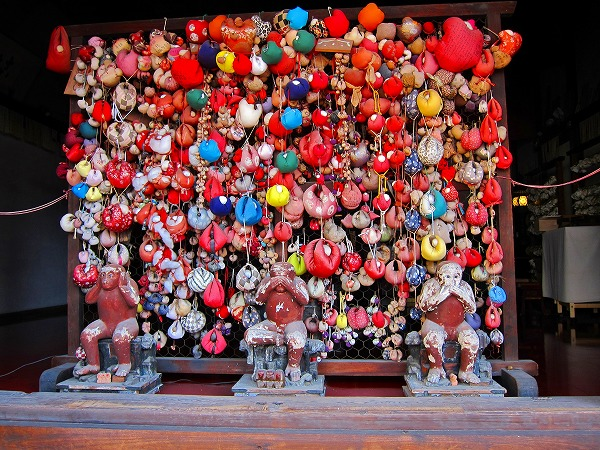
本堂の正面には三猿が安置されている。
ここには比較的古いくくり猿が奉納されているようだ。
後日古い資料を見たが、かつては三猿の後ろにはこんなにくくり猿は奉納されていなかった。
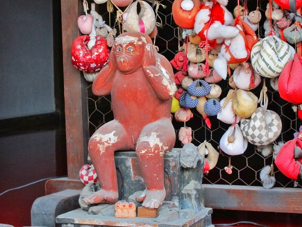
それにしてもキュートなおサルさんだ。
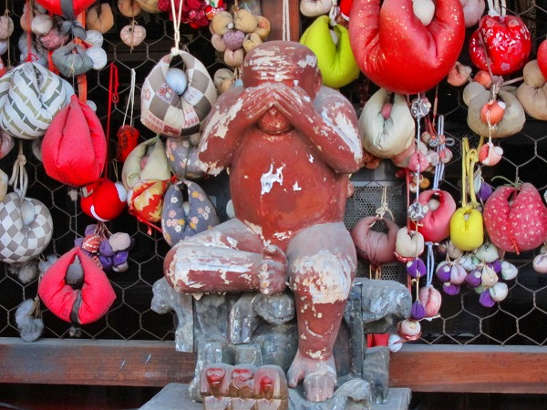
庚申様の「申」から猿が神の使いとされるようになった。
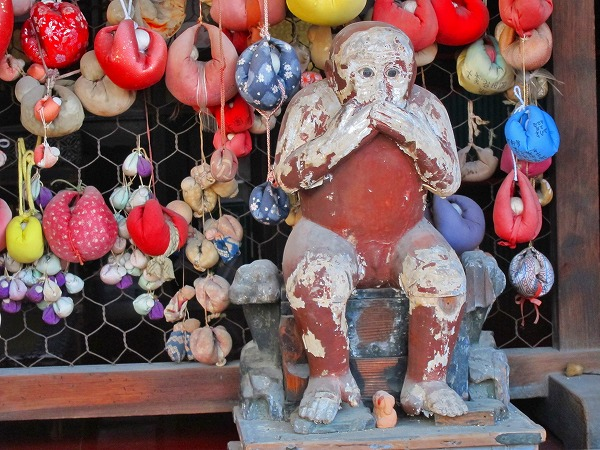
言わざる、だけやけに塗装が剥がれてしまっている。かわいそう。
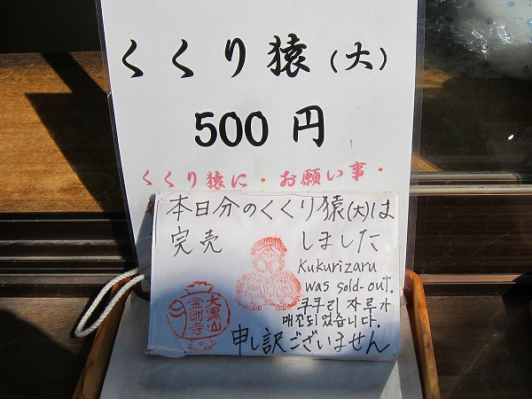
あまりの人気に連日売り切れてしまうそうな。
日本語のみならず英語、ハングルで書かれている辺り、この寺の国際的な人気を如実に物語っていますな。
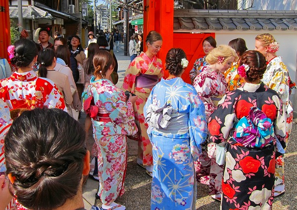
境内では着物を着た外国の方が楽しそうに談笑していた。
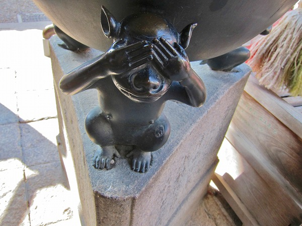
香炉の足元まで三猿でした。
…というわけで、二年後。
久々に近所を通りかかったので寄ってみましたよ。
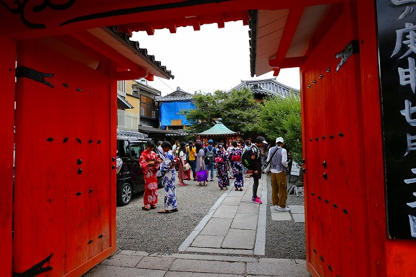
相変わらず人気のスポットのようで…
夏だったのでみなさん浴衣ですな。
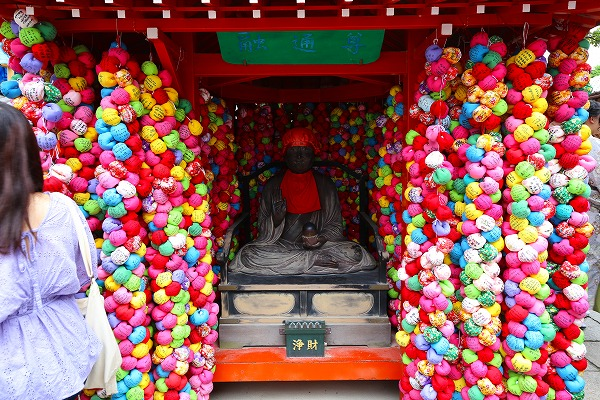
おびんずるさまも相変わらずの大人気。
本堂に行ってみたらビックリ！
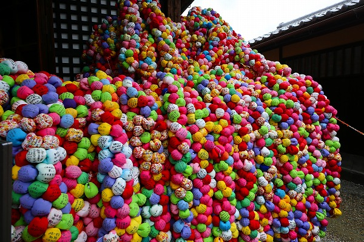
奉納されたくくり猿がもりもりに盛り上がって欄干が完全に隠れてしまっているぞ。
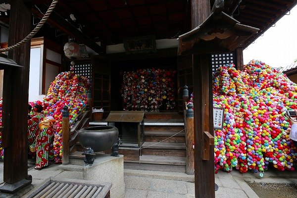
向かって左側の欄干も完全に埋まってしまっている。
何か、なされるがままって感じになってますけど…。
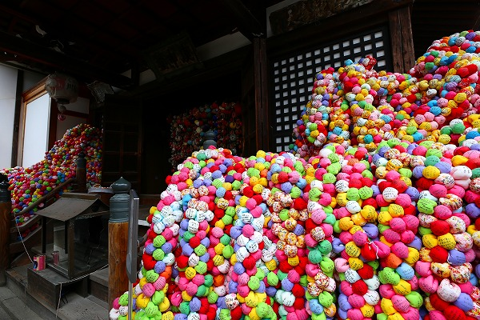
わずか2年余りでこれだけ増殖したら、数年後には本堂全体が覆われてしまうのでは…などと夢想してしまう。
それはそれで面白そう。
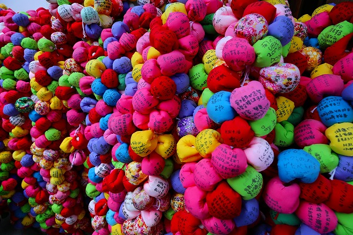
色とりどりの猿。
観光客向けにカラーバリエーションを増やしたと考えられるが、それが見事にハマってインスタ映えスポットとして世界中に人気なのだとか。
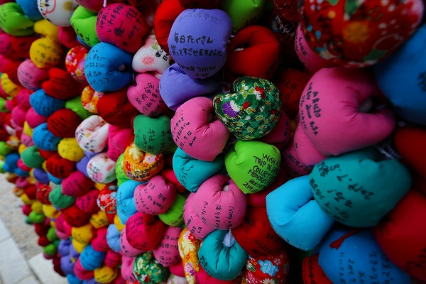
中には柄物のくくり猿もあるが、奉納者が自ら作ったオリジナル猿なのだろうか。
どの猿にも願い事が書かれている。
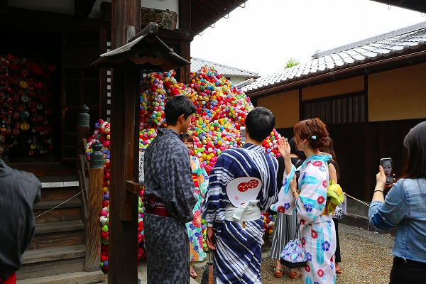
ダブルデートかあ、いいなぁ若さって…（遠い目）。
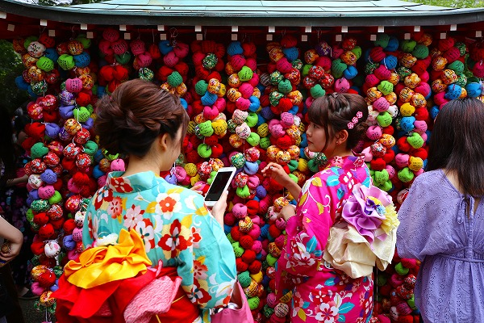
次から次へと若い女性がやって来る。
おっさんが独りでいるだけでかなり恥ずかしいぞ。
そろそろ退散いたしやす…。
2017.04. 2019.07.
珍寺大道場 HOME